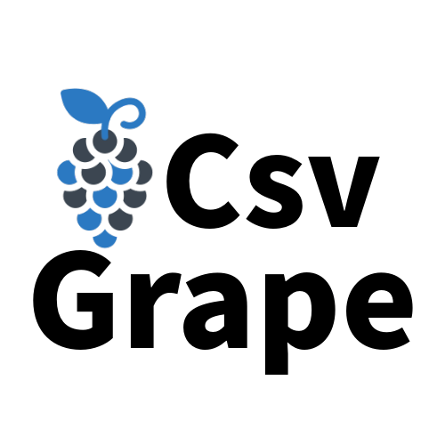

<main role="main" id="main" class="mb-4">
  <div class="content-body">
    <div class="page-header" id="page-header">
      <div class="name-logo">
        
        <div class="details px-5 py-2">
          <h1>Csv Grape</h1>
          Csv Grape is a library that handles csv files and its metadata for js or typescript projects. If you need to handle csv files in your typescript projects. Don't worry , this library will help you to get csv data in json format .
        </div>
      </div>

      <div class="technical p-3">
        <div class="technology">
          <kbd>Typescript</kbd>
          <kbd>Angular</kbd>
          <kbd>React</kbd>
          <kbd>Npm</kbd>
        </div>
        <div class="tag">
          <a href="https://www.npmjs.com/package/csv-grape" rel="nofollow"></a>
          
        </div>

      </div>
    </div>
    <div class="page-Content col-md-12" id="left-nav">
      <div class="left-bar col-md-3" id="left-bar">
        <div class="nav flex-column nav-pills me-3" id="v-pills-tab" role="tablist" aria-orientation="vertical">
          <div class="tab-header"><label><i class="fa-solid fa-file-signature"></i> Documentation</label></div>
          <button class="nav-link active" id="v-pills-Introduction-tab" data-bs-toggle="pill" data-bs-target="#v-pills-Introduction" type="button" role="tab" aria-controls="v-pills-Introduction" aria-selected="true"><i class="fa-solid fa-layer-group"></i> Introduction</button>
          <button class="nav-link" id="v-pills-Installation-tab" data-bs-toggle="pill" data-bs-target="#v-pills-Installation" type="button" role="tab" aria-controls="v-pills-Installation" aria-selected="false"><i class="fa-solid fa-layer-group"></i> Installation</button>
          <button class="nav-link" id="v-pills-CustomAttributes-tab" data-bs-toggle="pill" data-bs-target="#v-pills-CustomAttributes" type="button" role="tab" aria-controls="v-pills-CustomAttributes" aria-selected="false"><i class="fa-solid fa-layer-group"></i> Custom Attributes</button>
          <button class="nav-link" id="v-pills-Example-tab" data-bs-toggle="pill" data-bs-target="#v-pills-Example" type="button" role="tab" aria-controls="v-pills-Example" aria-selected="false"><i class="fa-solid fa-layer-group"></i> Example</button>
          <div class="tab-header mt-3"><label><i class="fa-solid fa-mug-hot"></i> Tech</label></div>
          <button class="nav-link" id="v-pills-Library-tab" data-bs-toggle="pill" data-bs-target="#v-pills-Library" type="button" role="tab" aria-controls="v-pills-Library" aria-selected="false"><i class="fa-solid fa-layer-group"></i> Library</button>
          <button class="nav-link" id="v-pills-Contributors-tab" data-bs-toggle="pill" data-bs-target="#v-pills-Contributors" type="button" role="tab" aria-controls="v-pills-Contributors" aria-selected="false"><i class="fa-solid fa-layer-group"></i> Contributors</button>
        </div>
      </div>
      <div class="content-text col-md-9" id="content-text">
        <div class="tab-content" id="v-pills-tabContent">
          <div class="tab-pane fade show active" id="v-pills-Introduction" role="tabpanel" aria-labelledby="v-pills-Introduction-tab">
            <div class="blog-post">
              <h2 class="blog-post-title"><i class="fas fa-quote-left"></i> Introduction</h2>

              <p>This library provides an easy way to convert a list of objects into a CSV (Comma-Separated Values) file. It's
                particularly useful when you need to export data from your application to a format that can be easily imported into
                spreadsheet software or other tools.</p>
              <h5>Features: </h5>
              <ul>
                <li>Converts a list of objects (such as a collection of custom classes) into a CSV file.</li>
                <li>Handles escaping special characters (like commas and double quotes) within the data.</li>
                <li>Supports custom delimiters (e.g., semicolon, tab) if needed.</li>
              </ul>
            </div>
          </div>
          <div class="tab-pane fade" id="v-pills-Installation" role="tabpanel" aria-labelledby="v-pills-Installation-tab">
            <div class="blog-post">
              <h2 class="blog-post-title"><i class="fas fa-quote-left"></i> Installation</h2>
                <h5>Using NuGet Package Manager: </h5>
              <ul>
                <li>Open your project in Visual Studio.</li>
                <li>Go to Tools > NuGet Package Manager > Manage NuGet Packages for Solution.</li>
                <li>Search for "ObjectToCsv" and install it.</li>
                <li>ObjectToCsv is a popular library that simplifies reading and writing CSV files in C#.</li>
              </ul>
              <h5>Manual Installation:</h5>
              <ul>
                <li>Download the ObjectToCsv library from NuGet.</li>
                <li>Add the reference to your project.</li>
              </ul>
            </div>
          </div>
          <div class="tab-pane fade" id="v-pills-CustomAttributes" role="tabpanel" aria-labelledby="v-pills-CustomAttributes-tab">
            <div class="blog-post">
              <h2 class="blog-post-title"><i class="fas fa-quote-left"></i> Custom Attributes</h2>

              <ol>
                <li>In C#, when working with models, it&prime;s common to encounter scenarios where the property names in the model differ
                  from the column names in a CSV file. To address this issue, we can use the Header attribute. This attribute
                  facilitates the mapping between CSV columns and model properties.</li>
                <li>Additionally, there&prime;s another attribute called Ordinal. The purpose of this attribute is to help the library
                  identify the order of CSV headers, which can be useful during data processing.</li>
              </ol>
            </div>
          </div>
        <div class="tab-pane fade" id="v-pills-Example" role="tabpanel" aria-labelledby="v-pills-Example-tab">
          <div class="blog-post">
            <h2 class="blog-post-title"><i class="fas fa-quote-left"></i> Update row of a table</h2>

            <div>Suppose you have a class called Person with properties like Id, Name, Age, and Email. You want to convert a list of Person objects to a CSV file.
              <ol>
                <li> Create a list of Person objects</li>
                <li>Add Header and Ordinal attribute for properties.</li>
              </ol>

            </div>
              <h3 class="blog-post-title">Design Model</h3>
            <pre>
                <code class="language-javaScript">//Design Model
          public class PersonObject
          &#123;
              [Header("Id")]
              [Ordinal(0)]
              public Guid Id &#123; get; set; &#125;

              [Header("Email")]
              [Ordinal(1)]
              public string Email &#123; get; set; &#125;

              [Header("User Name")]
              [Ordinal(2)]
              public string Name &#123; get; set; &#125;

              [Header("Age")]
              [Ordinal(3)]
              public string Age &#123; get; set; &#125;

              [Header("Email")]
              [Ordinal(4)]
              public string Email &#123; get; set; &#125;
          &#125;
            </code>
              </pre>
            <hr>
            <h3 class="blog-post-title">Code Example</h3>
            <pre>
                <code class="language-javaScript">//Example code
          using ObjectToCsv;


          List&lt;PersonObject&gt; users = GetTestObjectList();//get list of any object that you want to convert .

          var csvString = CsvUtil.BindCsv&lt;PersonObject&gt;(users); //call library to get csv string
            </code>
              </pre>
            <hr>

          </div>
      </div>
      <div class="tab-pane fade" id="v-pills-Library" role="tabpanel" aria-labelledby="v-pills-Library-tab">
        <div class="blog-post">
          <div>
            
            <div>
              <p>Get is the package manager for .NET. The NuGet client tools provide the ability to produce and consume
                packages.
                The NuGet Gallery is the central package repository used by all package authors and consumers.</p>
              <div class="dev-link">
                <a href="https://www.nuget.org/packages/ObjectToCsv" rel="noopener noreferrer nofollow"></a>
                <a href="https://github.com/OpenRangeOrg/ObjectToCsv" rel="noopener noreferrer nofollow"></a>
                <a href="https://github.com/OpenRangeOrg/.github/blob/main/LICENSE" rel="noopener noreferrer nofollow"></a>
                <a href="https://github.com/OpenRangeOrg/ObjectToCsv/" rel="noopener noreferrer nofollow"></a>
              </div>
            </div>
          </div>
        </div>
      </div>
      <div class="tab-pane fade" id="v-pills-Contributors" role="tabpanel" aria-labelledby="v-pills-Contributors-tab">
        <div class="blog-post">
          <div class="row projects">
            <div class="col-md-10 offset-md-1">
              <!-- Three columns of text below the carousel -->
              <div class="row">
                <div class="col-lg-6 dev-card-block">
                  
                  <h5>Nihar Sarkar</h5>
                  <div class="dev-link">
                    <a href="https://github.com/NIHAR-SARKAR" class="text-dark" target="_blank"><i class="fab fa-github"></i></a>
                    <a href="https://stackoverflow.com/users/4655349/nihar-sarkar?tab=profile" class="text-warning"  target="_blank"><i class="fab fa-stack-overflow"></i></a>
                    <a href="https://www.nuget.org/profiles/NIHAR-SARKAR" class="text-info"  target="_blank"><i class="fab fa-microsoft"></i></a>
                    <a href="https://www.npmjs.com/~nihar_sarkar" class="text-danger"  target="_blank"><i class="fab fa-npm"></i></a>
                    <a href="https://sarkarnihar.in" target="_blank"><i class="fas fa-globe"></i></a>
                  </div>
                  <p class="small-text">I am in control because I want to be. I have my fingers on the switch, but have lived a lifetime ignoring
                    the control I have over my own world. I am a programmer today! Now, I am familiar with few but most precious
                    and important prgramming languages.
                  </p>
                </div>
              </div>

            </div>
          </div>
        </div>
      </div>
      </div>
    </div>

  </div>
